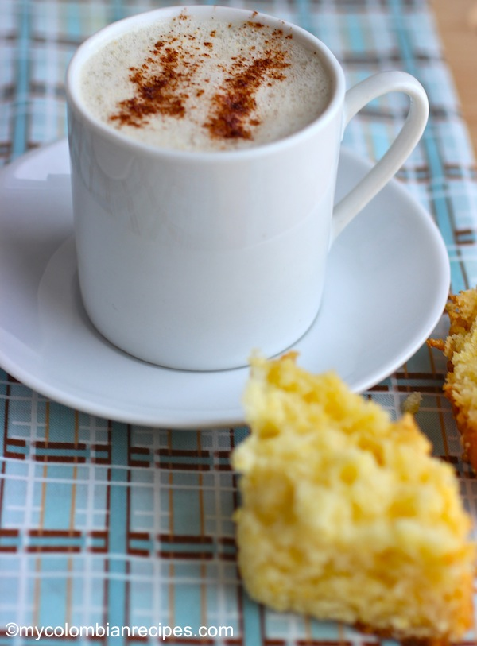

Candil
Candil

Ingredientes
- 3 tazas de leche entera
- ¼ taza de panela rallada o azúcar morena o a su gusto
- 2 palitos de canela
- 2 yemas de huevo
- Canela molida para servir
Instrucciones
- En una olla mediana, combine la leche, la panela y los palitos de canela. Llevar a hervir y luego reducir el fuego a medio-bajo.
- En un tazón batir las yemas de huevo, verter aproximadamente ½ taza de leche tibia sobre las yemas de huevo batiendo bien, luego agregar lentamente la mezcla de yema de huevo al resto de la leche y revolver bien.
- Cocine a fuego medio bajo, revolviendo constantemente, hasta que la mezcla comience a espesar, sin dejar que hierva. Espolvoree canela molida y sirva inmediatamente.
Vuelve al menù de recetas